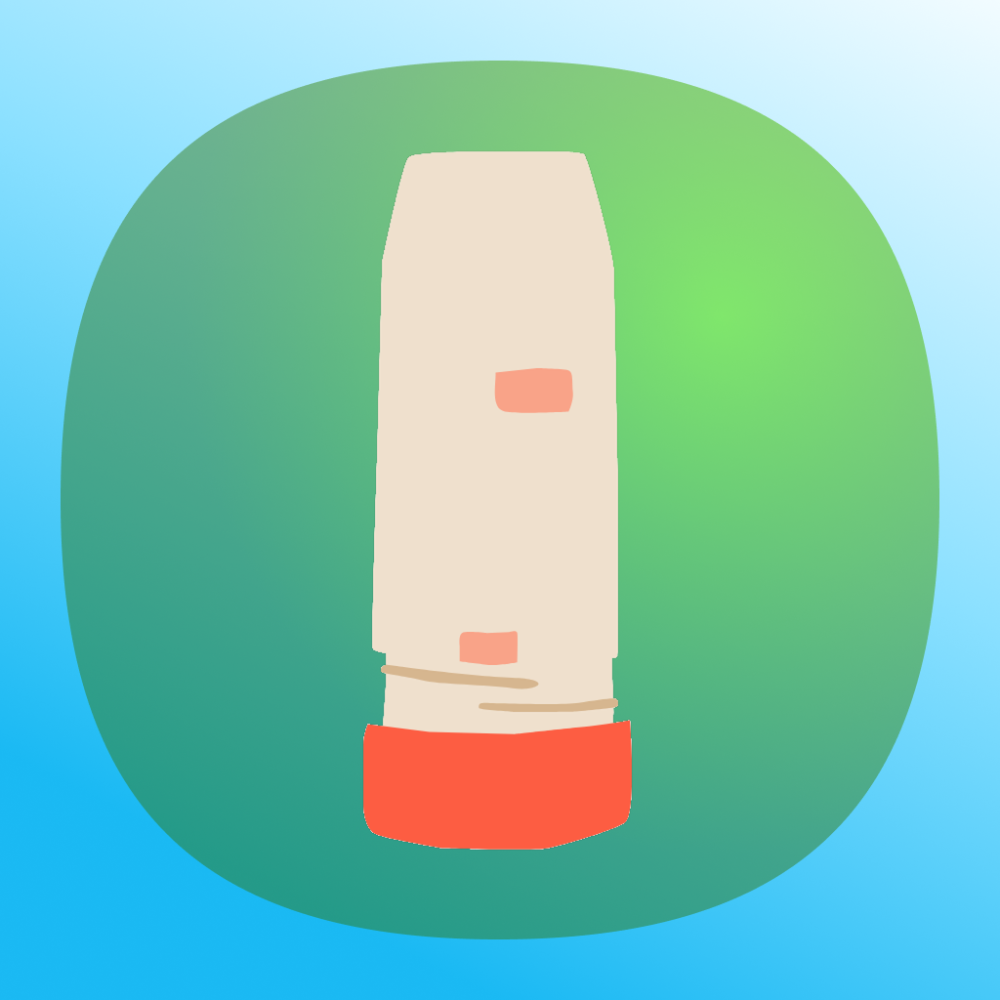

服用記録カウンター
吸入薬・点鼻薬の残り服用回数管理
花粉症・アレルギー性鼻炎・喘息等の服薬カウントと残量チェック
吸入薬・点鼻薬の残り服用回数管理
花粉症・アレルギー性鼻炎・喘息等の服薬カウントと残量チェック
喘息の吸入薬や花粉症・アレルギー性鼻炎の点鼻薬など、残量が表示されない薬の残り回数を簡単に管理できるアプリ。服薬をカウンターで記録し、残量を一目で確認できます。
機能: 薬の総回数と使用回数を入力し、残り回数をリアルタイムで表示します。
メリット: 「あと何回使えるか」を常に把握でき、薬の残量不足による不安を解消します。
機能: 「使用する」ボタンをタップするだけで服薬を記録、自動で履歴を保存します。
メリット: 簡単操作で記録漏れを防ぎ、正確な残量管理をサポートします。
機能: 同じ薬を複数本（例: 1本目、2本目）登録し、それぞれの残量や履歴を個別に管理。
メリット: 複数の薬を整理しやすく、どの薬がどれだけ残っているか一目でわかります。
機能: 服薬日時やメモを記録し、必要に応じて編集や削除が可能です。
メリット: 過去の服薬状況を確認でき、医師との相談や治療計画の調整に役立ちます。
機能: アクティブな薬と使い終わった薬を分けて表示し、シンプルで視認性の高いデザインを採用。
メリット: 誰でも簡単に操作でき、毎日の服薬管理がストレスフリーに。